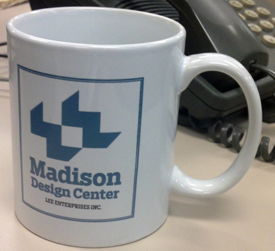
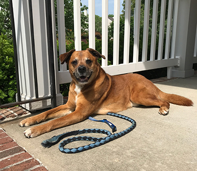
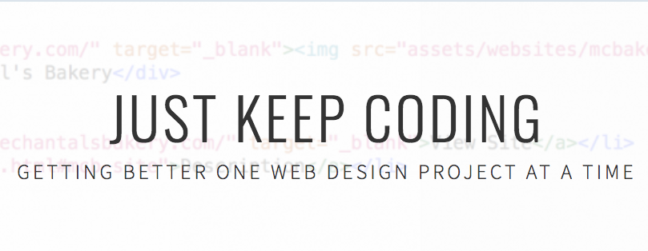

About...
This Website
This website is a portfolio of my work. However, it will not be "static." In addition to keeping it up-to-date with my latest projects, I will work on maintenance and other behind-the-scenes tasks. This will include making sure the site works on mobile devices, copyediting as necessary, improving design and functionality, etc. Since I plan to work regularly on improving this site, constructive criticism is welcome.
My Journey to Web Design and Development
The Beginning
Writing was my first real passion. I always loved my English classes, and have been writing my own stories since elementary school. By the time I started high school, I was trying to figure out how I could build a career around writing. I joined my high school newspaper and yearbook staffs, where I was introduced to reporting, news writing, and print design. The faculty advisor for these staffs took us to camps, conferences, and competitions so we could learn new techniques from our fellow students and industry professionals. During this time, my interest started shifting from reporting to news design, and I placed for news page design at regional, state, and national competitions. By the fall of my senior year, I had decided to go to the University of Missouri and pursue a degree in journalism.
The College Years
Before freshmen year was over, I knew I would not be pursuing reporting as a career. Instead, I would complete the Multiplatform Design emphasis area, which focused on news design for newspapers, magazines, and news websites. Several things about my degree planned changed over the years, but my desire to design a platform that drew people's attention to the content remained. In the fall of 2013, I took my first web design course. I loved it. Prior to this course, I had only considered working at newspapers or magazines. After the course, I knew I had to include web design in my future.
In my sophomore year, I decided to earn a Bachelor's of Science and Business Administration with an emphasis in marketing, as well. Honestly, this degree was added as back-up to ease my parents' worry that the "journalism thing" was not going to work. However, the marketing courses I took complemented my courses in the journalism school. Where one taught me how to create content, the other covered how to get people to see or interact with it. In addition, I took courses about accounting, finance, and management which left me with a working knowledge of the non-creative side of business — something a lot of creatives and (young) journalists don't really have. My interest in marketing actually grew to the point where I had planned to pursue an MBA in marketing research.
The First Job
However, I scrapped the plan to pursue an MBA. By the time it came to apply to graduate school, my interest had waned and I was burned out from 4.5 years (summers included) of undergrad. Instead, I completed my bachelor programs, graduated in December 2014, and promptly moved to Madison, Wisconsin.
In Madison, I worked at the Lee Enterprises's Madison Regional Design Center as a news page designer. I held this position for two years while trying to build my web design skills on my own time through online services such as Codecademy and Code School. While I loved a lot about my job, I decided it was time to move on and return school.
The Return to School
I started my course work at Anne Arundel Community College in January 2017. During my time at AACC, I took classes covering HTML, CSS, and responsive web design; and introducing me to PHP and mySQL, Java, JavaScript, and jQuery. All of these courses have taken a hands-on approach so I have created 10+ multi-page websites for my web design classes and small applications for my programming ones. I completed my program in May 2018 with a Computer Science Associate's degree and certificate in Internet Applications Development.
In addition to school, I worked as a freelance web designer for a local business during the summer of 2017, and have been employed at a start-up web design and software company since May 2017. In this position, I have planned and built websites for the company's clients, helped create the company's website, managed online and offline marketing efforts, and been involved in establishing company processes and procedures. I've loved having the opportunity to use my background in journalism (writing and content creation) with marketing (social media and e-marketing campaigns) with my web design and development skills.
The Present
Web design and development can be as frustrating as it is fun, but that's why I love it. Plus, there's always something new to learn. I like knowing that, whatever I do in the design and development world, I won't be bored.
I don't have a clear path for my future, but I do know I want to design websites (or even applications) that are accessible and provide positive user experiences. Currently, my goal is to get more experience with front-end and back-end programming languages so that I can work in different areas of web and application development.
Fun Facts
- I have lived in 13 states and visited 21 states; and I lived in Germany for 3 years.
- I have a 10-year-old boxer-mix named Buster. He uses his cuteness to his advantage and runs the house.
- I once interviewed Nick Offerman for a class project. The audio can be listened to on my Mustache Madness website.
- I've been writing stories since the third grade, and continue to as a hobby. Maybe one day I'll actually finish something.
- My favorite book series is still "Harry Potter", but I don't have a specific favorite book of the series or in general (just several that are important to me).
Just Keep Coding
Check out my WordPress blog, Just Keep Coding, where I discuss my coding projects and share industry articles I find interesting.